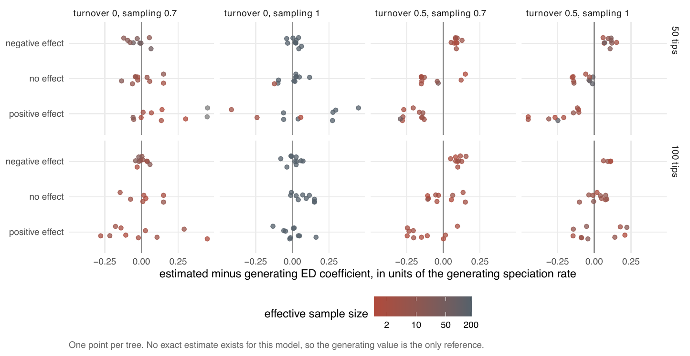

E2 — Recovery and selection for the ED models
| Status | complete for the main tier (24 cells); the paper tier (200 tips at \(\rho\) 1; 100 tips at \(\rho\) 0.4) was not run, no data on disk. Historical: a method-development step; not a current result (linear-link ned on thinning, on trees from the raw-ED simulator before f30a791; ned recovery is measured under the conditioned likelihood by E46, Estimability) |
| Package build | emphasis a38a9e8 by the study's README; unresolved: the run's library was reinstalled at a38a9e8 only at 00:36 CEST on 2026-09-19, after the report stamp; the install the run used is not recorded |
| Driver / analysis | the ed-diversification driver (§4 of its own 00-design.md); cell table by sim/E2-tables.R |
| Data | manuscript/tables/E2-cells.csv (24 cells). The per-tree fits live in the ed-diversification repository, not under results/ |
Question
The claim under test: for the evolutionary-distinctiveness models (ed, ned), \(\beta_{ED}\) is recovered and detected wherever the augmented tree stays small, and the boundary of that region is stated. E2 is the first measurement of ned against its own generating value, with turnover and sampling fraction as the axes that were expected to break it. It is the starting point for E8 (whether the AIC ranking can be trusted) and E12 (at which effect size selection starts to work).
Design
ned generator, linear link, \(\lambda_s = \beta_0 + \beta_N N + \beta_{ED}\,\mathrm{ED}_s\); the effect is stated as \(\beta_{ED}\,\overline{\mathrm{ED}}/\beta_0\), a fraction of the intercept \(\lambda_0\) at one clade-mean unit of ED.
| parameter | value | meaning |
|---|---|---|
| tips \(n\) | 50, 100 | size of the observed tree |
| sampling fraction \(\rho\) | 1, 0.7 | share of extant species in the tree |
| turnover \(\varepsilon\) | 0, 0.5 | \(\mu_0/\lambda_0\) |
| ED effect | \(-0.15\), 0, \(+0.15\,\lambda_0\) | \(\beta_{ED}\) between -0.33 and +0.09 in raw units, per cell |
| trees per cell | 10 | 24 cells, 240 trees |
| candidates | cr, dd, ed, ned |
each tree fitted with all four |
| draws | \(N = 200\) | plus a ned reference fit at \(N = 2000\) on two trees per cell (not in the cell table) |
| proposal | the ED-aware thinning proposal of a38a9e8 |
An estimate counts when the fit ended on its own or was stopped by its budget after at least 20 EM iterations (the fits column counts these).
Pre-set rule
The rule (00-design.md §1), per cell with an effect: ned over dd by \(> 2\) AIC on \(\ge 80\%\) of trees; \(\le 5\%\) in the \(\beta_{ED} = 0\) sibling cell; \(|\text{bias}| \le 0.25\) SD (between-tree SD of \(\hat\beta_{ED}\)). The paper was to report which cells pass and the effective sample at which they stop passing.
Results
1 of 16 effect cells passes the rule: 100 tips, \(\rho\) 1, turnover 0, -0.15\(\lambda\) (selection 0.90, sibling false positives 0.00, bias 0.21 SD, median ESS 200).
Cells with an effect (from E2-cells.csv; "sel" = ned over dd by > 2 AIC; "FP" = the same rate in the \(\beta\) = 0 sibling; "budget" = share of fits stopped by the budget):
| tips | \(\rho\) | \(\varepsilon\) | effect | fits used | sel | FP (sibling) | bias / SD | median ESS | budget | rule |
|---|---|---|---|---|---|---|---|---|---|---|
| 100 | 1 | 0 | -0.15 | 10 | 0.90 | 0.00 | 0.21 | 200 | 0.3 | pass |
| 100 | 1 | 0 | +0.15 | 10 | 0.00 | 0.00 | -0.00 | 200 | 0 | fail |
| 50 | 1 | 0 | -0.15 | 10 | 0.70 | 0.10 | 0.52 | 200 | 0 | fail |
| 50 | 1 | 0 | +0.15 | 10 | 0.40 | 0.10 | 0.23 | 200 | 0 | fail |
| 100 | 0.7 | 0 | -0.15 | 10 | 0.60 | 0.14 | 0.11 | 11.9 | 1.0 | fail |
| 100 | 0.7 | 0 | +0.15 | 10 | 0.00 | 0.14 | -0.03 | 2.1 (sampler-limited) | 1.0 | fail |
| 50 | 0.7 | 0 | -0.15 | 9 | 1.00 | 0.20 | -0.48 | 25.4 | 0.3 | fail |
| 50 | 0.7 | 0 | +0.15 | 10 | not computed | 0.20 | 0.75 | 1.9 (sampler-limited) | 0.7 | fail |
| 100 | 1 | 0.5 | -0.15 | 4 of 10 | 0.75 | 0.10 | 4.17 | 2.9 (sampler-limited) | 0.1 | fail (6 fits failed) |
| 100 | 1 | 0.5 | +0.15 | 10 | 0.20 | 0.10 | 0.13 | 6.4 (sampler-limited) | 0 | fail |
| 50 | 1 | 0.5 | -0.15 | 9 | 0.89 | 0.50 | 3.36 | 12.6 | 0.1 | fail |
| 50 | 1 | 0.5 | +0.15 | 10 | 0.80 | 0.50 | -1.82 | 2.9 (sampler-limited) | 0 | fail |
| 100 | 0.7 | 0.5 | -0.15 | 9 | 0.44 | 0.30 | 3.43 | 2.1 (sampler-limited) | 0.4 | fail |
| 100 | 0.7 | 0.5 | +0.15 | 10 | 0.20 | 0.30 | -1.03 | 1.9 (sampler-limited) | 0 | fail |
| 50 | 0.7 | 0.5 | -0.15 | 9 | 0.89 | 0.90 | 4.43 | 2.8 (sampler-limited) | 0.1 | fail |
| 50 | 0.7 | 0.5 | +0.15 | 10 | 0.30 | 0.90 | -3.03 | 3.3 (sampler-limited) | 0 | fail |
The \(\beta\) = 0 cells at \(\rho\) 0.7 have median ESS 4.8 (50 tips) and 2.0 (100 tips, 7 of 10 fits usable).
By axis:
- Turnover 0, \(\rho\) 1. Every fit has an ESS of 200 of 200 and nearly every fit ended on its own. Bias is within 0.25 SD in 3 of 4 cells; the positive effect is not selected at 100 tips (0.00) and on 0.40 at 50.
- Turnover 0, \(\rho\) 0.7. The ESS falls to 12-25 at -0.15\(\lambda\) and to 2 at zero and +0.15\(\lambda\); at 100 tips every fit ended on its budget.
- Turnover 0.5. Bias is 1.0 to 4.4 SD in 7 of 8 effect cells, the median ESS 2 to 13, and the sibling cells select
nedon 0.1 to 0.9 of trees with no effect, so no selection rate at this turnover can be read. 6 of 10 fits failed in the 100-tip, \(\rho\) 1, -0.15\(\lambda\) cell.

Conclusion
The rule (\(> 2\) AIC on \(\ge 80\%\) of trees, \(\le 5\%\) false positives, \(|\text{bias}| \le 0.25\) SD) is met in 1 of 16 effect cells. Recovery holds at turnover 0 with complete sampling (bias within 0.25 SD in 3 of 4 cells, ESS 200), and selection at -0.15\(\lambda\) reaches 0.80 only at 100 tips. At \(\rho\) 0.7 the proposal's effective sample drops below 10 outside the -0.15\(\lambda\) cells; at turnover 0.5 the estimates are biased by 1 to 4 SD and the null siblings select ned on up to 0.9 of trees, so turnover 0.5 is the boundary of the method, as the design said it would be measured. E2 does not measure the size boundary (200 tips) or the sampling boundary (\(\rho\) 0.4): the paper tier was never run. It also keeps no ed recovery: ed was fitted as a candidate but only the ned table was kept, and the first ed recovery is E24b.
E2 is a method-development step: its ned trees were drawn by the raw-ED simulator before f30a791, which made ed clades about 30% too large; how far that change moves these linear-link ned generators is not recorded, and E46 measures ned recovery again under the conditioned likelihood.